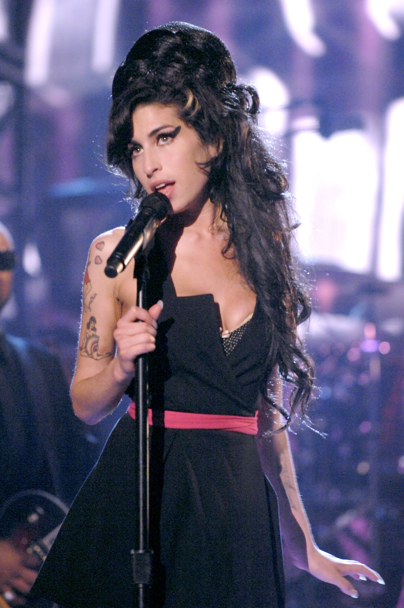

Enquanto ainda se apresentava com a National Youth Jazz Orchestra, Winehouse foi incentivada a realizar uma gravação musical demonstrativa por Tyler James, que pretendia enviá-la aos seus empresários musicais. James havia assistido a uma de suas apresentações com o grupo e, imediatamente, entrou em contato com Nick Shymansky, funcionário de uma agência de relações públicas chamada Brilliant!, com a qual acabara de assinar um contrato.[15][20] Amy Winehouse forneceu-lhe um CD cuja gravação foi realizada com o auxílio de uma de suas professoras da Sylvia Young Theatre School e Tyler entregou-o a Shymansky, que rapidamente entrou em contato com a cantora para encontrá-la e presenciar um de seus concertos.[20] Após vê-la atuar, Nick apresentou-a a seu chefe na Brilliant!, Nick Godwyn, que assinou com ela um contrato de representação artística.[6] A Brilliant!, no entanto, encerraria as suas atividades pouco tempo depois, mas parte da empresa, em que estavam incluídos Winehouse, Godwyn e Shymansky, foi adquirida pela 19 Entertainment, propriedade de Simon Fuller. A cantora, então, firmou um contrato de representação artística com Simon, que a remunerou com 250 libras semanais — valor este que seria descontado de futuros lucros — para que ela se concentrasse em desenvolver as suas habilidades musicais e não precisasse de trabalhar neste meio período.[20] Com isto, ela adquiriu o seu primeiro apartamento, para o qual se mudou com Juliette Ashby.
No entanto, mesmo após oficializar o seu contrato com a Brilliant!, Winehouse continuou a apresentar-se em clubes de Londres, entre eles o Cobden Club, no qual chegou a ser elogiada por Annie Lennox.[20] Além disso, continuou a despertar o interesse de outros representantes musicais, como os da Virgin Records e da EMI Music.[21] Consequentemente, acabou por assinar um contrato de administração dos direitos autorais com Guy Moot, representante encarregado da divisão de artistas e repertório da EMI, que a designou para trabalhar com os produtores Salaam Remi e Gordon Williams, mas decidiu, a princípio, mantê-la em segredo da indústria fonográfica.[20][21] Darcus Beeze, responsável pelo departamento de artistas e repertório da Universal Music do Reino Unido, ouviu uma de suas gravações quando um representante dos Lewinson Brothers, uma dupla de produtores musicais, foi-lhe mostrar algumas das canções que eles estavam produzindo e, acidentalmente, tocou uma das canções de Winehouse. Quando Beeze perguntou quem estava cantando, o gerente disse que não estava autorizado a responder.
Após ter decidido que queria contratá-la, Beeze levou cerca de seis meses para conseguir encontrar a cantora.[21] À época, Winehouse ainda não havia gravado qualquer material, pois estava em estágio de desenvolvimento, e Beese organizou uma audição ao vivo nos escritórios da Universal em frente de um painel de altos executivos, em 2002, na qual a cantora apresentou a sua versão de "There Is No Greater Love", canção de 1936 originalmente interpretada por Woody Herman, apenas acompanhada à guitarra.[6][8] Em seguida, a jovem assinou um contrato de gravação com a editora e uma de suas subsidiárias, a Island Records, que ficou responsável por seus lançamentos no Reino Unido.